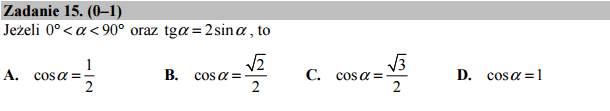

O tożsamości trygonometrycznej i założeniach¶
Sprawdźmy czy Sage potrafi rozwiązać równanie \(\tan(x)=2\sin(x)\)?
Otrzymujemy dwa rozwiązania. Które jest poprawne? Zauważmy, że mamy
podany w zadaniu warunek dla kąta, co wyklucza jedno z nich. W Sage
możemy spróbowac podać ten warunek używając funkcji assume():
Warto też przyjrzeć się wykresom lewej i prowej strony równania. Nie pomoże to w tym przypadku otrzymać rozwiązanie, ale zasugeruje, że rozwiązanie istnieje i pokaże mniej więcej jego wartość:
Jak to działa? - rhs()
W Sage funkcja solve standardowo zwraca listę wyrażeń w postaci:
[ x==2, x==3 ]
Czasem chcemy podstawić - bez ręcznego przepisywania wyrażenia -
wartość rozwiązania po lewej stronie równości np. do innego
wyrażenie. W Sage służy do tego celu metoda .rhs() (z
ang. right hand side), która zwraca prawą strone wyrażenia
zawierającego logiczne (matematycznie) równa się ==. Na
przykład (a==1).rhs(), zwróci 1.
Istnieje też metoda .lhs() (z ang. left hand side), która
zwraca lewą stronę wyrażenia.